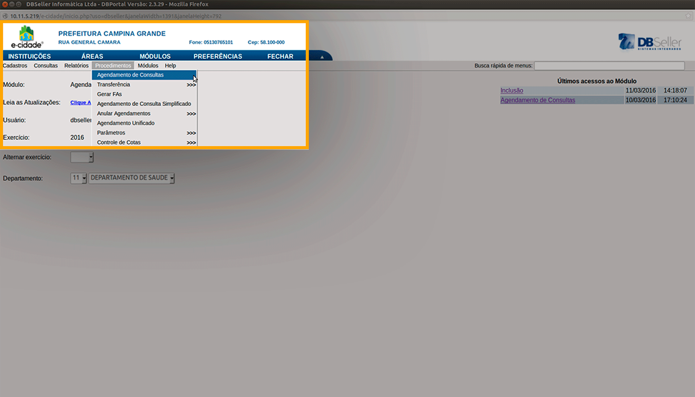
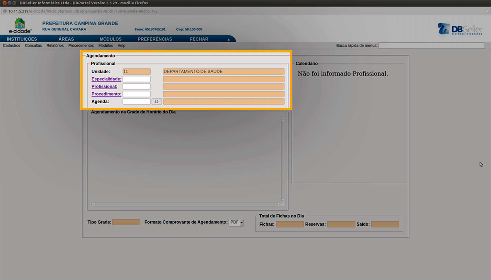
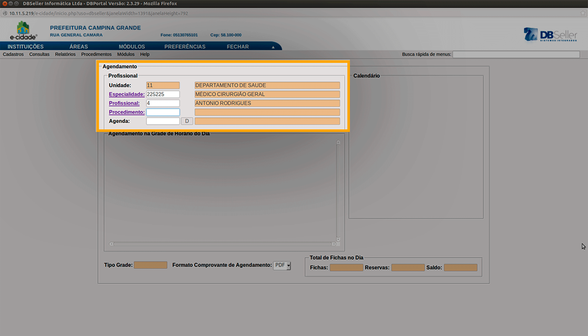

Depois de cadastrar e visualizar os tipos de ficha de agendamento disponíveis na plataforma e-Cidade, você pode realizar os agendamentos de consultas. Basta, no módulo Agendamento, seguir os passos a seguir, ilustrados na figura 5.
1- Na barra de menus, clique em Procedimentos.
2- Siga até a opção Agendamento de Consultas.

A nova tela que surgiu é um formulário de agendamento de consulta, que você pode preencher a partir de pesquisas em cada campo, clicando em cada link. Veja os passos e as ilustrações a seguir:
1- Certifique-se o campo Unidade está preenchido com uma unidade válida. Caso contrário, volte ao tópico de Introdução para ver como selecionar uma unidade válida para o agendamento de consulta. Veja o exemplo da figura 6, onde a Unidade já vem selecionada.

2- O primeiro item a ser preenchido é a Especialidade. Clique no link Especialidade para que o sistema mostre uma nova tela, e assim você escolha o tipo de especialidade, pesquisando em uma lista. Basta apenas selecionar a especialidade desejada para voltar a tela anterior de agendamento ou clicar em Fechar.
3- O próximo item é o profissional de saúde. Clique no link Profissional, para que o sistema mostre uma nova tela, e assim você escolha o profissional associado a especialidade escolhida no item anterior. Basta apenas selecionar o profissional desejado para voltar a tela anterior de agendamento ou clicar em Fechar.
Observação: Note que se houver só um profissional associado a uma determinada especialidade, basta apenas clicar no link Especialidade e os dois campos serão preenchidos de uma só vez. Veja o exemplo da figura 7.

4- O próximo passo é selecionar o procedimento que será feito na data marcada neste agendamento, pelo profissional de saúde associado a especialidade escolhida. Clique no link Procedimento, para que o sistema mostre uma nova tela, e assim você escolha o profissional associado a especialidade escolhida no item anterior. Observe um exemplo de uma lista de procedimentos na figura 8. Basta apenas selecionar o procedimento desejado para voltar a tela anterior de agendamento ou clicar em Fechar.

Observação: Você pode visualizar mais itens clicando no botão Todos, onde os mais de mil tipos de procedimentos serão exibidos nessa lista.
5 - O último passo é selecionar a data desejada para agendar o procedimento desejado. Para isso, basta clicar no botão D, no campo Agenda, e selecionar a data desejada.
Feito isso, agora você visualizará uma lista de agendamentos, organizados pela grade de horário do dia selecionado. Clique nos dias mostrados no calendário, localizado na parte direita da tela, e visualize os agendamentos que estão marcados, no dia selecionado. Observe a legenda, que destaca dias onde o profissional de saúde estará Ausente, Liberado, Marcado ou Lotado.
6- Para realizar um agendamento, clique no link “L”, nas Opções, mostradas na tabela de Agendamento na Grade de Horário do Dia. Veja a figura 9.
Observação: A opção L quer dizer Lançar Conteúdo da linha, ou seja, alocar um paciente naquela linha correspondente ao horário que ele irá ocupar. As outras opções A, C e F (Anular conteúdo, Comprovante de Agendamento e Gerar FAA, respectivamente) serão tratadas mais a frente.
7- Após cumprir todos esses passos, você poderá preencher os dados do paciente que está agendando um procedimento, na nova janela suspensa que surgir. Para isso, clique no link CGS, para buscar esse paciente, como mostrado na figura 10.
8- Com isso deverá surgir uma tela de pesquisa de paciente pelo Código do Cadastro Geral de Saúde. Para efetivar essa pesquisa de um paciente, digite algum dos dados que são necessários, como mostrado no exemplo da figura 11. De forma prática, o exemplo contém uma busca com filtragem pelo nome do paciente. Você pode utilizar o filtro mais conveniente. Após preencher um ou mais filtros, clique no botão Pesquisar.
9- Aparecerá então, uma lista de Pacientes, os quais o nome se assemelha ao que você está procurando. Selecione um paciente da lista para prosseguir clicando no campo nome do paciente desejado. Veja a figura 12.
10- Uma mensagem de confirmação aparecerá em sua tela. Clique em OK, caso o nome selecionado, é o de sua preferência. Veja a figura 13. Caso contrário, clique em Cancel para voltar a pesquisa. Observe que o código CGS aparece ao lado do nome do paciente desejado, caso seja útil.
Feito isso, o processo de agendamento estará concluído e o sistema irá gerar automaticamente, um comprovante de agendamento, como mostrado na figura 14 a seguir. Veja que todas as informações preenchidas nos passos anteriores estarão descritas nesse comprovante.
Observação: Observe também que, após que o agendamento é realizado, a Grade de Horário do Dia é alterada, contendo agora, o agendamento cadastrado. A opção C, para gerar o comprovante de agendamento, e a opção F, para gerar a ficha de atendimento ambulatorial, poderão ser utilizadas e serão detalhadas nas próximas seções. Observe a figura 15.